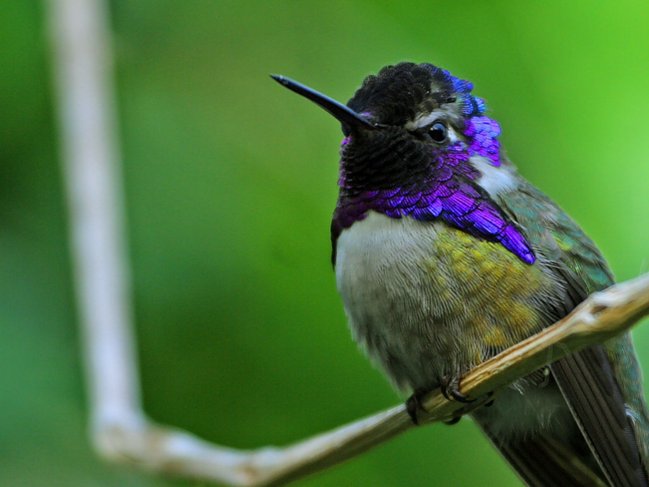

Hummingbird Introduction
Hummingbirds are birds from the Americas that constitute the family Trochilidae. They are among the smallest of birds, most species measuring 7.5–13 cm (3–5 in) in length. Indeed, the smallest extant bird species is a hummingbird, the 5 cm (2.0 in) bee hummingbird weighing less than 2.0 g (0.07 oz).
They are known as hummingbirds because of the humming sound created by their beating wings which flap at high frequencies audible to humans. They hover in mid-air at rapid wing-flapping rates, which vary from around 12 beats per second in the largest species, to in excess of 80 in some of the smallest. Of those species that have been measured in wind tunnels, their top speed exceeds 15 m/s (54 km/h; 34 mph) and some species can dive at speeds in excess of 22 m/s (79 km/h; 49 mph).
Hummingbirds have the highest metabolism of any homeothermic animal.[3] To conserve energy when food is scarce, and nightly when not foraging, they can go into torpor, a state similar to hibernation, slowing metabolic rate to 1/15th of its normal rate.